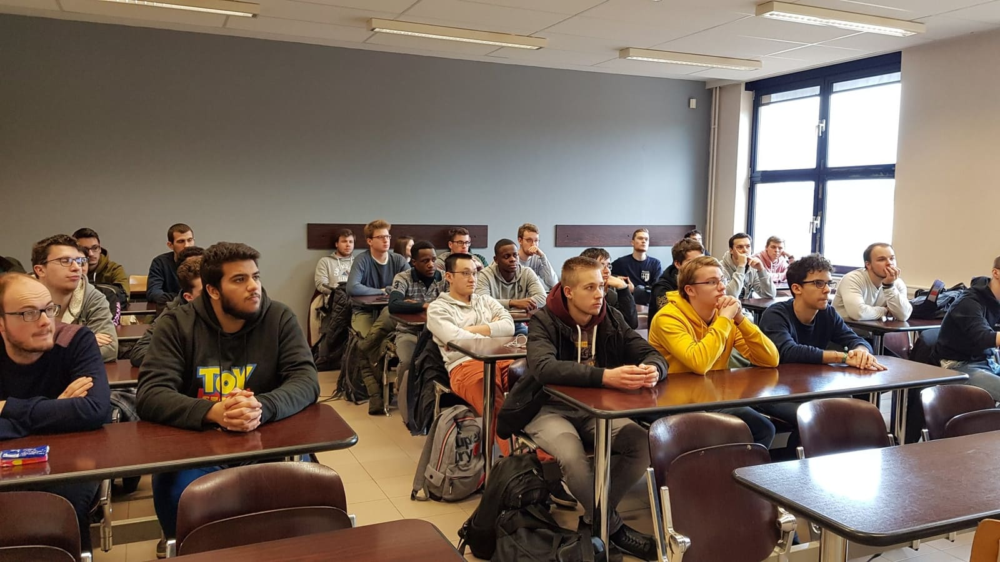
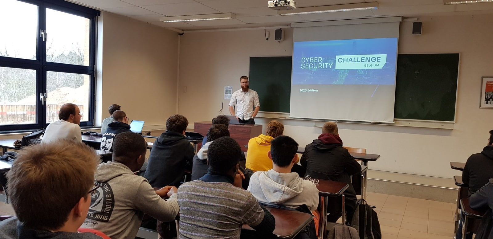

Présentation CSC

Durant ma première année de formation, des amis à moi ce sont inscrits pour le Cyber Security Challenge (CSC). Le CSC est une compétition 'Catch The Flag' dont le but est de retrouver des 'Flags' cachés dans des défis. Ayant vu mes amis s'amuser enormement (et ce prendre la tête un peu aussi), je me suis rendu à la présentation de la compétition organisée à l'Ephec. Cette présentation n'a fait que confirmer mon envie d'y participer, et c'est exactement ce que j'ai fini par faire. (Voir participation CSC)
 